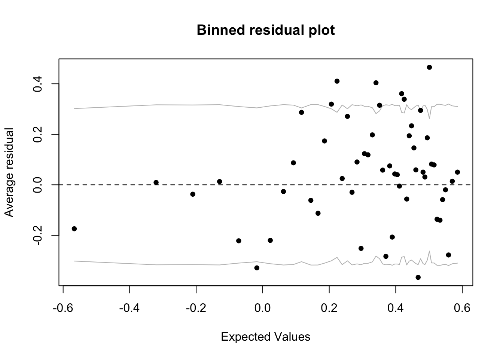
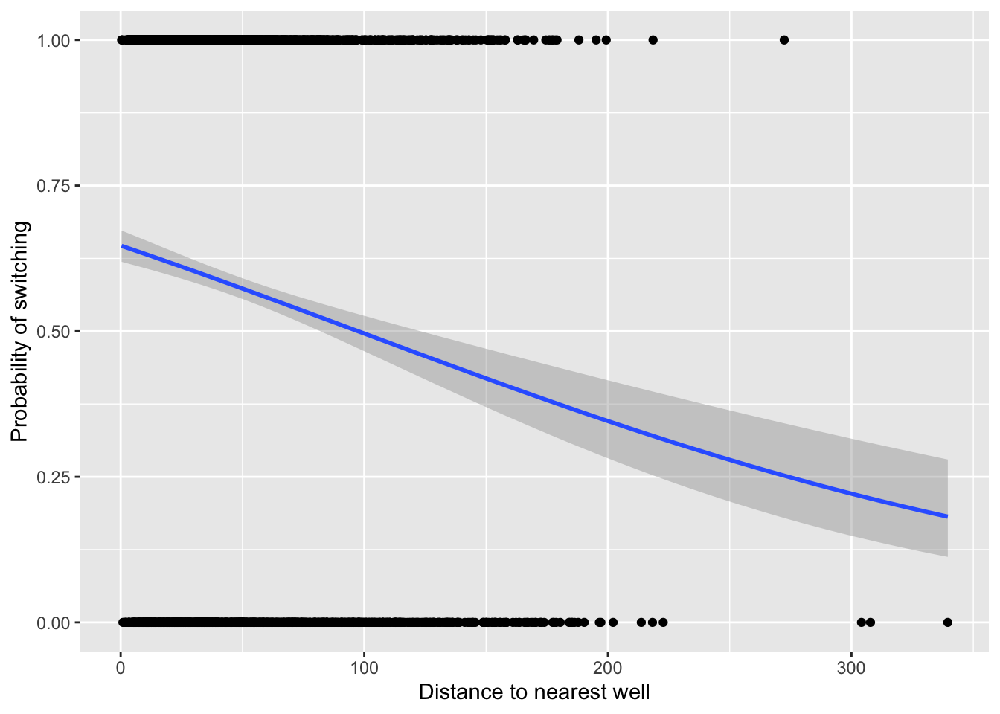
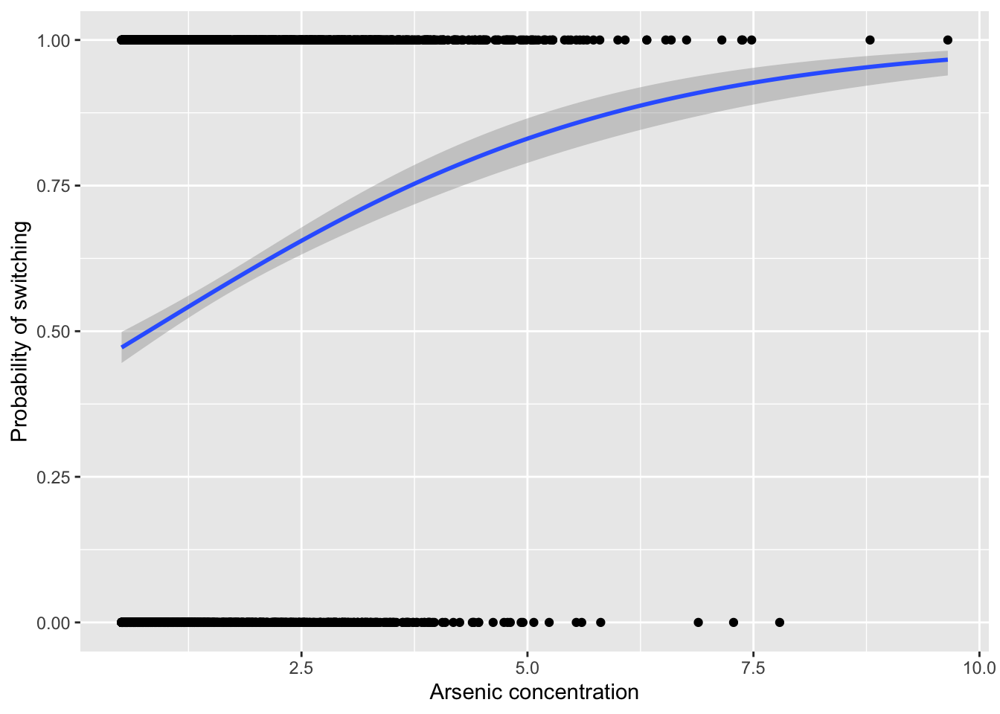

18 GLMs for binary data
18.1 Binary data
- Binary data is a type of binomial count data in which the binomial denominator is one
- Therefore, every trial has a value of either one or zero
- This type of data can be analyzed using the GLM with a binomial distribution with the same set of link functions to prevent predictions below zero and above one
- However, since this type of data is so constrained, there are some differences:
- The ratio of residual deviance: DF to diagnose under/overdispersion does not apply
- But we can use the
binnedplot()function in the arm package to diagnose dispersion
install.packages("arm", repos = "https://cran.us.r-project.org")
install.packages("ggplot2", repos = "https://cran.us.r-project.org")
install.packages("ggfortify", repos = "https://cran.us.r-project.org")
install.packages("patchwork", repos = "https://cran.us.r-project.org")
install.packages("dplyr", repos = "https://cran.us.r-project.org")
install.packages("Sleuth3", repos = "https://cran.us.r-project.org")
install.packages("readr", repos = "https://cran.us.r-project.org")18.2 The wells data set for the binary GLM example
- The example dataset for this chapter come from Gelman and Hill (2006):
- The data concern a Bangladeshi region in whcih many drinking water wells are contaminated by naturally occuring arsenic:
urlfile="https://raw.githubusercontent.com/apicellap/data/main/Data_Binary_Wells.csv"
wells<-read_csv(url(urlfile))
#> Rows: 3020 Columns: 5
#> ── Column specification ────────────────────────────────────
#> Delimiter: ","
#> dbl (5): switch, arsenic, dist, assoc, educ
#>
#> ℹ Use `spec()` to retrieve the full column specification for this data.
#> ℹ Specify the column types or set `show_col_types = FALSE` to quiet this message.
str(wells)
#> spec_tbl_df [3,020 × 5] (S3: spec_tbl_df/tbl_df/tbl/data.frame)
#> $ switch : num [1:3020] 1 1 0 1 1 1 1 1 1 1 ...
#> $ arsenic: num [1:3020] 2.36 0.71 2.07 1.15 1.1 3.9 2.97 3.24 3.28 2.52 ...
#> $ dist : num [1:3020] 16.8 47.3 21 21.5 40.9 ...
#> $ assoc : num [1:3020] 0 0 0 0 1 1 1 0 1 1 ...
#> $ educ : num [1:3020] 0 0 10 12 14 9 4 10 0 0 ...
#> - attr(*, "spec")=
#> .. cols(
#> .. switch = col_double(),
#> .. arsenic = col_double(),
#> .. dist = col_double(),
#> .. assoc = col_double(),
#> .. educ = col_double()
#> .. )
#> - attr(*, "problems")=<externalptr>- The dataframe consists of three important variables (the other two we will ignore):
- switch - the binary response of whether or not people switch the well from which they were drinking
- arsenic - the concentration of arsenic
- dist - the distance to the nearest safe well
Define some labels:
xlabel <- "Distance to nearest well"
ylabel <- "Probability of switching"Visualize the data of how distance to a safe well may predict switching probability:
fig18_1 <- ggplot(wells, aes(x = dist, y = switch)) +
labs(x = xlabel, y = ylabel) +
geom_point() +
geom_smooth()
fig18_1
#> `geom_smooth()` using method = 'gam' and formula 'y ~ s(x, bs = "cs")'
- From the figure it seems like distance to a well may influence whether someone switches
Rescale the x axis values:
wells$dist100 <- wells$dist/100Fit a GLM for switching vs distance:
Check the model’s diagnostics:
autoplot(fit_1)
- Due to the constrained nature of the binary data, the diagnostic plots are of little value
Diagnose dispersion:
x <- predict(fit_1) #extract predicted values from the model
y <- resid(fit_1) #extract the residuals from the model
fig18_3 <- binnedplot(x, y)
- The gray lines on the plot indicate \(\pm2\) standard errors within which approximately 95% of the binned residuals lie
- Ideally for this type of graph, we’d want plenty of bins and plenty of datapoints per each bin, so this approach works well for smaller datasets
- The expectation that around 95% of the residuals falls within the bounds seems to be met, so we can proceed:
Examine the coefficents:
coef(fit_1)
#> (Intercept) dist100
#> 0.6059594 -0.6218819Examine the 95% confidence interval:
confint(fit_1)
#> Waiting for profiling to be done...
#> 2.5 % 97.5 %
#> (Intercept) 0.4882230 0.7246814
#> dist100 -0.8140762 -0.4319795- This CI supports the hypothesis that the further away a well is, the less likely people will switch to it
- Gelman & Hill (2006) suggest a rule of thumb for interpretting the slope of a logistic regression:
- The ‘divide by four rule’ in which you divide the coefficient for the logistic regression slope by 4 to get an approximate estimate of the maximum predicted effect of a unit change in the predictor on the response
- Gelman & Hill (2006) suggest a rule of thumb for interpretting the slope of a logistic regression:
Plot the data superimposed with a binomial GLM:
fig18_4 <- ggplot(wells, aes(x = dist, y = switch)) +
labs(x = xlabel, y = ylabel) +
geom_point() +
geom_smooth(method = "glm", method.args = "binomial")
fig18_4
#> `geom_smooth()` using formula 'y ~ x'
Evaluate the effect of arsenic concentration:
fit_2 <- glm(switch ~ arsenic, binomial(link = "logit"),
data = wells)
display(fit_2)
#> glm(formula = switch ~ arsenic, family = binomial(link = "logit"),
#> data = wells)
#> coef.est coef.se
#> (Intercept) -0.31 0.07
#> arsenic 0.38 0.04
#> ---
#> n = 3020, k = 2
#> residual deviance = 4008.7, null deviance = 4118.1 (difference = 109.4)- Given this model and the following figure, there also seems to be a clear positive effect of higher arsenic concentrations leading to greater probabilities of switching wells:
fig18_5 <- ggplot(wells, aes(x = arsenic, y = switch)) +
labs(x = "Arsenic concentration", y = ylabel) +
geom_point() +
geom_smooth(method = "glm", method.args = "binomial")
fig18_5
#> `geom_smooth()` using formula 'y ~ x'
18.3 Centering
- Both the effect of arsenic concentration and distance to the nearest safe well can be examined in the same model
- Prior to fitting the GLM, we can make life easier by centering the explanatory variables by subtracting their mean value
- This approach has advantages when a regression intercept value of zero is unhelpful or doesn’t make sense
wells$c.dist100 <- wells$dist100 - mean(wells$dist100)
wells$c.arsenic <- wells$arsenic - mean(wells$arsenic)
head(wells)
#> # A tibble: 6 × 8
#> switch arsenic dist assoc educ dist100 c.dist100
#> <dbl> <dbl> <dbl> <dbl> <dbl> <dbl> <dbl>
#> 1 1 2.36 16.8 0 0 0.168 -0.315
#> 2 1 0.71 47.3 0 0 0.473 -0.0101
#> 3 0 2.07 21.0 0 10 0.210 -0.274
#> 4 1 1.15 21.5 0 12 0.215 -0.268
#> 5 1 1.1 40.9 1 14 0.409 -0.0746
#> 6 1 3.9 69.5 1 9 0.695 0.212
#> # … with 1 more variable: c.arsenic <dbl>- Considering arsenic and distance simultaneously introduces the possibility of an interaction:
fit_5 <- glm(switch ~ c.dist100 + c.arsenic + c.dist100:c.arsenic,
family = binomial, data = wells )
display(fit_5)
#> glm(formula = switch ~ c.dist100 + c.arsenic + c.dist100:c.arsenic,
#> family = binomial, data = wells)
#> coef.est coef.se
#> (Intercept) 0.35 0.04
#> c.dist100 -0.87 0.10
#> c.arsenic 0.47 0.04
#> c.dist100:c.arsenic -0.18 0.10
#> ---
#> n = 3020, k = 4
#> residual deviance = 3927.6, null deviance = 4118.1 (difference = 190.5)-
display(fit_5)output:- second row - effect of a change of 100 m when arsenic is at the average level
- third row - effect of a unit change of arsenic for a well at average distance
- fourth row (interaction) - for every 100 m increase, there is an additional -0.18 for the arsenic coefficient
- Compare ratios of estimates to their respective standard errors to get a sense of the effect of each coefficient
- The interaction term’s estimate not even 2x as big as its SE, so while the interaction between contaminant concentration and distance is going in that direction, it probably isn’t significant
- We can look at whether the null hypotheses can be rejected or not by checking the 95% CI:
confint(fit_5)
#> Waiting for profiling to be done...
#> 2.5 % 97.5 %
#> (Intercept) 0.2732603 0.42951145
#> c.dist100 -1.0808894 -0.66992679
#> c.arsenic 0.3882846 0.55325092
#> c.dist100:c.arsenic -0.3795821 0.02232171